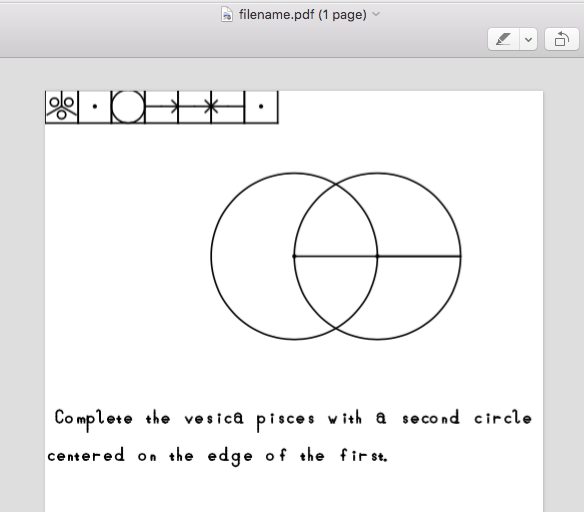

What do I mean by that? Several things. For one thing, it means you care about relative position of things, not absolute position. So while you don't really care if a window on your desktop is located a half inch higher or lower, if a line of text suddenly jumps up or down in the middle of a line by that much you really care a lot! As it stands now when you interact with a computer you usually have either almost no control over geometry, as when I type this text and I cannot make it go at an arbitrary angle without some massive extra effort, or way too much control, as when you're moving a mouse pointer around trying to get something lined up just right and if you're doing it freehand can almost never get it right where you want it.
With Geometron, I replace the infinite freedom of the mouse or the very limited freedom of the arrow keys in text with a set of operations concerning the nature of what I call a cursor, which is different than any cursor you might be used to. The cursor has, at any given time, several properties in addition to its position in x and y space on the screen. Those include a direction, a length, a scale factor by which all magnifications are carried out, and a step angle by which all rotations are carried out.
Step angles are based on types of lattice that make sense, that we're used to using: square arrays(90 degrees), equilateral triangles(60 degrees and 120 degrees), fractions of the pentagon(72 degrees), and various divisions of those by 2 or 3. All rotations are discrete, meaning they are not by some random angle, but are by whatever the current setting is of the step angle.
Motions are based on a fixed length that the cursor has at any given time, and are again discrete. The size of that fixed length can get scaled up or down by an amount which can be several different scale factors chosen for their geometric significance, including the square root of 2, the square root of 3, the Golden Ratio, 2, and 3.
Probably none of this makes too much sense until you actually try it. If you know something about code and have used the Processing programming language,go through my docs on github and check it out.
Applications include:
Here are some screenshots:

The above image shows how I combine the font which I wrote from scratch using Geometron(this is easy, and can be easily taught, unlike MetaFont) with images of geometric ideas. It is part of the Action Geometry book which will be typeset entirely using the Geometron system eventually.
This shows how one can easily and quickly make interesting artistic patterns. Again, the figure shown here could be made by a new user relatively quickly and easily. While one could of course also do this with the Adobe suite or some code, this is both free, much easier to learn, and can be taught without any reference to English or even a specific computer system, as the geometric ideas could be implemented with compass and straight edge just as the ancient Greeks did as well.
The glyphs below the geometric figure are an example of what the actual Geometron language looks like. Again no reference is made to English, Greek, or any other existing human language, or to computer procedural code as would be used by such systems as Logo or Processing. And again, no specific machine is needed for the glyphs. They could be implemented with wood tiles, and taught to a child with no use of computers *or* English, and then that child could immediately write code that can be executed on any platform, with no further training.
This shows how the system can be used to very quickly generate schematic diagrams for electrical circuit design. The specific symbols, such as the resistor shown here, can be reprogrammed by the user for any specific application, such as different fabrication architectures for EDA applications or different brand "languages" for marketing applications, or map symbols for GIS applications. Symbol shape tables are stored in a human readable text based format that relates ASCII code to the geometric glyphs referenced above.